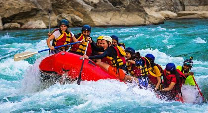
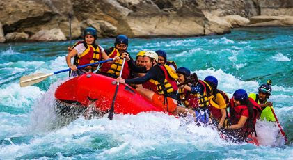

To provide unforgettable whitewater rafting experiences that connect people with nature, inspire adventure, and promote outdoor recreation in a safe and environmentally responsible way.

To provide unforgettable whitewater rafting experiences that connect people with nature, inspire adventure, and promote outdoor recreation in a safe and environmentally responsible way.
At Psalm Whitewater Spirit Adventures, our mission is to deliver thrilling and safe whitewater rafting journeys that challenge the spirit, build camaraderie, and celebrate the wild beauty of rivers. We are dedicated to fostering a deep respect for nature, prioritizing guest safety, and creating lifelong memories through expert-guided river expeditions.
We believe in the power of nature to awaken the soul. We navigate each rapid with courage and care. We respect the river, honor our team, and serve our guests with passion. We are stewards of the wild, protectors of the flow, and adventurers at heart.
Ride the Rapids and Feel the Spirit
Psalm Whitewater Rafting was founded in 2020 with a simple but powerful vision: to help people reconnect with nature and faith through the raw, exhilarating experience of whitewater rafting. Inspired by the peaceful strength of flowing rivers and the reflective power of the Psalms, our founders—outdoor enthusiasts and community leaders—set out to create more than just a rafting company. What began as a small, family-operated service on one local river quickly gained momentum as word spread about our spiritually enriching and expertly guided rafting trips. Our early guests spoke of more than just adrenaline and scenery—they spoke of peace, renewal, and connection. Over the years, Psalm Whitewater Rafting has expanded its operations to include multiple river routes, seasonal tours, and adventure packages for families, schools, corporate teams, and faith-based groups. Our team of certified guides and nature lovers is deeply committed to safety, stewardship, and creating experiences that inspire both thrill and reflection. Today, Psalm Whitewater Rafting stands as a beacon for those who seek not just adventure, but meaning in the wild waters. Whether you’re navigating Class V rapids or floating through calm canyons, we’re here to guide you—physically, emotionally, and spiritually.


 
